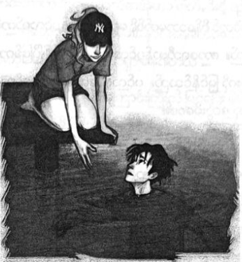

အဆိုးဝါးဆုံး မြစ်ရေချိုးခြင်း
အိတ်ကပ်ထဲသို့ ဓား ပြန်ရောက်လာချိန်တွင် အကျဉ်းခန်းထဲ ရောက်နေပေပြီ။ အကျဉ်းခန်းမှာ နံရံလေးဖက်ပိတ် ဖြစ်ပြီး ပြတင်းပေါက်သေးသေး တစ်ခုပင်မရှိ။ အရိုးစုအစောင့်က ပါစီကို အကျဉ်းခန်းထဲ နံရံဖောက်သွင်းကာ တွန်းထည့် ခဲ့ပြီး နောက်နံရံမှာ ကျောက်သားပမာ ပြန်မာသွားခဲ့သည်။ လေလုံခန်း ဟုတ်၊ မဟုတ် ပါစီ မသိ။ လေလုံခန်းလည်း ဖြစ်နေ နိုင်၏။ ဟေးဒီးစ်၏ အကျဉ်းထောင်မှာ လူသေများ အတွက်ဖြစ်ပြီး အသက်ရှူရန် မလိုအပ်ကြပေ။ နှစ် ငါးဆယ်၊ ခြောက်ဆယ် မပြောနှင့် မိနစ်ငါးဆယ်၊ ခြောက်ဆယ်အကြာမှာပင် အသက်ရှူကြပ်ကာ သေသွားနိုင်၏။ ထို့အပြင် ဟေးဒီးစ် မညာခဲ့ပါက နယူးယော့ခ်တွင် မကြာခင် ထောင်ချောက်တစ်ခု ဖြစ်လာမည်ဖြစ်ပြီး ထိုကိစ္စကို ပါစီ မတားဆီး နိုင်။
အေးစက်နေသော ကျောက်သားကြမ်းပြင်၌ ပါစီ စိတ်ပျက်လက်ပျက် ထိုင်နေမိသည်။ မည်သို့ အိပ်ပျော်သွား သလဲ မမှတ်မိချေ။ ကမ္ဘာပေါ်မှ အချိန်အရ မနက် ခုနစ် နာရီခန့် ရှိပြီ ဖြစ်ရာ ပါစီ အလွန်ပင်ပန်းနေပေပြီ။
အိပ်မက်ထဲတွင် စိန့်သောမတ်စ်ရှိ ရေချယ်လ်၏ ပင်လယ်ကမ်းခြေ အပန်းဖြေ အိမ်ကို တွေ့ရသည်။ ကာရေဘီယန် ပင်လယ်၌ နေထွက်ပြီ ဖြစ်ကာ ပင်လယ်ထဲ၌ ရွက်လှေလေးများကို မြင်နိုင်သည်။ ပင်လယ်ရေရနံ့က ဒီတစ်သက် ပင်လယ်ကို မြင်ရပါဦးမလားဟု တွေးမိစေ၏။
စားပွဲတွင် ရေချယ်လို့မိဘနှစ်ပါး ထိုင်နေပြီး စားဖိုမှူးက မနက်စာ ပြင်ဆင် ပေးနေသည်။ မစ္စတာဒါရီမှာ အဖြူရောင် ဝတ်စုံနှင့် ဖြစ်ပြီး ဝေါလ်စရိဂျာနယ်ကို ဖတ်နေ၏။ တစ်ဖက်ရှိ အမျိုးသမီးမှာ မစ္စစ်ဒါရီ ဖြစ်ပုံရပြီး ခရီးသွား မဂ္ဂဇင်းကို ဖတ်နေသဖြင့် ပန်းရောင်တောက်တောက် လက်သည်းများနှင့် လက်ကိုသာ မြင်နိုင်သည်။
ဝရန်တာတွင် ရပ်ရင်း ရေချယ်လ် သက်ပြင်း တွင်တွင်ချနေ၏။ ဗန်းဂိုးပုံပါ သောတီရှပ်နှင့် ဘောင်းဘီတို့ကို ဝတ်ထားသည်။ (ရေချယ်လ် ပြောပြသဖြင့် ဗန်ဂိုးကို ပါစီ သိခြင်းဖြစ်သည်။) သူ့အကြောင်းများ တွေးနေသလားဟု ပါစီ စဉ်းစားမိသည်။
ထို့နောက် မြင်ကွင်းက ပြောင်းသွားပြီး စိန့်လူးဝစ်သို့ ရောက်သွားပြန်သည်။ တစ်မြို့လုံး မိုးကြိုးမုန်တိုင်းများ ကျနေပြီး မှောင်မည်းနေကာ အရေးပေါ်ယာဉ်များစွာကို မြင်ရသည်။ ပြိုကျနေသော အဆောက်အအုံမှာ မိုးမျှော်တိုက်ကြီး ဖြစ်ပြီး ဖုန်မှုန့်များ တန်နှင့်ချီ၍ ပျံ့နှံ့လျက်ရှိသည်။ အနီးတွင် သတင်းထောက် တစ်ယောက်က သတင်းကြေညာနေ၏။
“တာဝန်ရှိသူတွေကတော့ အဆောက်အအုံမခိုင်လို့ ပြိုကျရတာလို့ ဆိုပါတယ် … ဒါပေမဲ့ မုန်တိုင်းနဲ့ သက်ဆိုင်မှု ရှိ၊ မရှိ ဘယ်သူမှ မပြောနိုင်ပါဘူး”
လေ အလွန်ကြမ်းနေသဖြင့် သတင်းထောက်၏ ဆံပင်များ တဖျပ်ဖျပ် လွင့်နေကြသည်။ ပါစီ စရောက်ချိန်ကနှင့် စာလျှင် အပူချိန်မှာ ဆယ်ဒီဂရီခန့်ထိ ချက်ချင်း ထိုးကျသွား၏။
“ကံကောင်းတာက ဒီအဆောက်အအုံဟာ ဖျက်ဆီးဖို့ ရည်ရွယ်ထားတာမို့ လူမနေတာပါပဲ … ရဲတွေကတော့ အနီးအနား အဆောက်အအုံက လူတွေကို အန္တရာယ်ရှိမှာစိုးတဲ့အတွက် ခေတ္တဖယ်ရှားနေပါတယ် …”
ကောင်းကင်မှ ဧရာမ လျှပ်စီးကြောင်းကြီးကို မြင်ရပြီး မိုးခြိမ်းသံက မြို့တစ်မြို့လုံး တုန်ခါသွားခဲ့သည်။ မိုးကြိုး ပစ်ပုံမှာ အလွန် အင်အားပြင်းထန်ပြီး ဇုစ်၏ မိုးကြိုးလက်နက်ဟု ပါစီ သဘောပေါက်လိုက်သည်။ ရန်သူမှာ အငွေ့ပျံသွား သင့်သော်လည်း အနက်ရောင်တိမ်များမှာ အနည်းသာ နောက်သို့ ယိုင်သွားခဲ့သည်။ တိမ်ထဲမှ မီးခိုးကဲ့သို့ လက်သီးကြီး ထွက်လာကာ နောက်ထပ် တာဝါတစ်ခုအား ထုချလိုက်လျှင် ကလေးကစားစရာ အိမ်လေးပမာ ပြိုကျသွား၏။
သတင်းထောက် အပါအဝင် လူများစွာ အော်ဟစ်၍ ထွက်ပြေးကြတော့သည်။ သမင်ဆွဲသော ငွေရောင်ရထားပျံ တစ်ခုကို ပါစီ မြင်မိသည်။ ဆန်တာကလော့စ် မဟုတ်ဘဲ အာတီးမစ် ဖြစ်နေကာ အမှောင်ထုထဲသို့ ငွေရောင် အလင်းတန်း များကို ပစ်လွှတ်နေ၏။ မီးဟုန်းဟုန်း တောက်နေသော ကြယ်တံခွန်တစ်ခုကိုလည်း တွေ့ရပြီး သူမ၏ အစ်ကို အပိုလို ဖြစ်ပေလိမ့်မည်။
သေချာသည်က တိုက်ဖွန်းမှာ မစ္စစပီမြစ်ထိ ရောက်လာခဲ့ပြီး အမေရိကကို တစ်ဝက်တိတိ ဖြတ်လာခဲ့ကာ လမ်းတစ်လျှောက် မြင်မြင်သမျှကို ဖျက်ဆီးပစ်ခဲ့သည်။ နတ်ဘုရားများမှာ သူ့ကို ခက်ခက်ခဲခဲ တားဆီးနေရသည်။ အမှောင်ရိပ်ကြီး မိုးကျလာပြီး ဘောလုံးကွင်း တစ်ကွင်းစာရှိသည့် ခြေထောက်ကြီးနှင့် အနင်းခံရလု ဆဲဆဲတွင် အသံ တစ်သံကို ကြားရ၏။
“ပါစီ …”
ဝုန်းခနဲ ခုန်ထရင်း အိပ်မက်မှ သေသေချာချာ မနိုးခင်မှာပင် နီကို့ကို ခုန်အုပ်ကာ လည်ပင်းအား လှိုင်းခွဲဓားနှင့် ထောက်ထားလိုက်နိုင်သည်။
“မင်းကို … လာ … ကယ်တာ …”
လည်ပင်းအစ်နေရင်းမှ နီကို ကြိုးစားပြောလာ၏။ ဒေါသကြောင့် ခပ်မြန်မြန်ပင် သတိပြန်ဝင်လာခဲ့သည်။
“ဟုတ်လား … ငါက မင်းကို ဘာလို့ယုံရမှာလဲ”
“မင်းမှာ ရွေးစရာ မရှိဘူးလေ …”
ထိုစကား မှန်လွန်းသဖြင့် နီကို့ကို ပါစီ လွှတ်ပေးလိုက်သည်။ ချောင်း တဟွတ် ဟွတ်ဆိုးနေပြီး အတန်ကြာမှ နီကို ပြန်ထလာကာ ပါစီ့လက်ထဲမှ ဓားကို သတိဖြင့် ကြည့်နေ၏။ သူ့ဓားကို ဓားအိမ်မှ ဆွဲမထုတ်ချေ။ ပါစီ့ကို သတ်ချင်လျှင် အိပ်ပျော်နေတုန်း သတ်သွားနိုင်၏။ သို့တိုင် နီကို့ကို သူမယုံချေ။
“ဒီနေရာက ထွက်ပြေးကြစို့”
“ဘာလို့လဲ … မင်းအဖေက ငါနဲ့ စကားပြောချင်ပြန်ပြီလား …”
နီကို့မျက်နှာ မဲ့သွားခဲ့သည်။
“ပါစီ … အဖေ ဘာတွေ ကြံစည်နေတယ်ဆိုတာ တကယ်ပဲ ငါ မသိဘူး …”
“စတစ်မြစ်ကို တိုင်တည်ပြီး ကျိန်ပါရဲ့ …”
“မင်းအဖေအကြောင်း မင်း မသိဘူးလား …”
“ငါ့ကို ညာသွားတာ … ကတိပေးပြီးတော့ …”
နီကို လက်မြှောက်ပြရင်း …
“ဒီမှာ … အခု အရေးကြီးတာ ထွက်ပြေးဖို့ … အစောင့်တွေကို ငါ အိပ်မွေ့ချထားခဲ့တာ .. ခဏနေ ပြန်နိုးလာကြ လိမ့်မယ်”
နီကို့ကို နောက်ထပ်တစ်ခါ လည်ပင်း ထပ်ညှစ်ချင်သော်လည်း သူ့စကား မှန်နေသည်။ ငြင်းခုံနေရန် အချိန်မရ သလို ပါစီ တစ်ယောက်တည်း ထွက်ပြေး၍ လည်း မဖြစ်နိုင်။ နံရံကို နီကို လက်ညှိုးညွှန်လိုက်လျှင် နံရံတစ်ခုလုံး ပျောက်သွားပြီး လျှောက်လမ်းတစ်ခု ပေါ်လာ၏။
“လာခဲ့ …”
ရှေ့မှ နီကို ဦးဆောင်နေပြီး အန်နာဘတ်၏ ကိုယ်ပျောက်ဦးထုပ်ကို ပါစီ လိုချင်မိသည်။ သို့သော် လက်တွေ့တွင် ကိုယ်ပျောက်ဦးထုပ် မလိုခဲ့။ အရိုးစုအစောင့် တစ်ယောက်နှင့် တိုးတိုင်း နီကို လက်ညှိုးညွှန်လိုက်လျှင် မျက်လုံးထဲမှ အလင်းရောင်များ မှေးမှိန်ကာ အိပ်ပျော်သွားကြသည်။ ကံဆိုးသည်က ထိုသို့များများ အိပ်ခိုင်းလေ နီကို ပင်ပန်းလာလေ ဖြစ်၏။ လျှောက်လမ်းတစ်ခုလုံး အစောင့်များစွာ တွေ့ရပြီး အရိုးစု စားဖိုမှူးများ ချက်ပြုတ်နေသည့် မီးဖိုဆီအရောက်တွင် နီကို့ကို ပါစီ တွဲခေါ်နေရပြီ ဖြစ်သည်။ မီးဖိုထဲမှ အရိုးစု စားဖိုမှူးများ၊ အစေအပါးများ အားလုံးကို အိပ်မွေ့ချ နိုင်ခဲ့ သော်လည်း နီကို့ကို တွဲခေါ်လာခဲ့ရသည်။ စိတ်သက်သာရာရပြီဟု ထင်မိချိန် မှာပင် ကြေးခေါင်းလောင်းသံများကို ရဲတိုက် ဆီမှ ကျယ်ကျယ်လောင်လောင် ကြားရ၏။
“အချက်ပေး ခေါင်းလောင်းသံ”
အိပ်ချင်မူးတူးဖြင့် နီကိုက ပြောသည်။
“ဘာဆက်လုပ်ကြမလဲ …”
အားရပါးရ သမ်းဝေပြီးနောက် ခေတ္တမျှ စဉ်းစားပြီး …
“ပြေးကြတာပေါ့ ……”
အိပ်ငိုက်နေသော ဟေးဒီးစ်၏ ကလေးကို တွဲခေါ်၍ ပြေးရခြင်းမှာ လူအရွယ်ရှိ အရုပ်ကြီး တစ်ရုပ်နှင့်တွဲပြီး ဂုန်နီအိတ်စွပ် ပြေးပွဲဝင်သကဲ့သို့ ခံစားရသည်။ လက်တစ်ဖက်တွင် ဓားကိုင်ထားသဖြင့် နတ်ကြေးဝါကို မြင်လျှင် ဝိညာဉ်များ ချက်ချင်း လမ်းဖယ်ပေးကြသည်။
ယခုအခါ ခေါင်းလောင်းသံများမှာ ကွင်းပြင်တစ်ခုလုံး ပျံ့နှံ့လာခဲ့ပြီး အရှေ့တွင် အီရီဘို့စ်နံရံကြီးကို မြင်နေရ သော်လည်း လျှောက်လေ ဝေးလေဟု ခံစားရ၏။ ပင်ပန်းလွန်းသဖြင့် ခွေကျသွားတော့မည့် အချိန်တွင် ရင်းနှီးနေသော ခွေးဟောင်သံ ကို ကြားလိုက်သည်။
“ဝုတ်”
ဘေးနားသို့ မစ္စအိုလာရီ ရောက်လာပြီး ပါစီ တို့ကို လှည့်ပတ်ပြေးရင်း ကစားရန် အဆင်သင့်ဖြစ်နေ၏။
“စတစ်မြစ်ကို လိုက်ပို့ပေးပါ …”
မစ္စအိုလာရီ ခုန်ပေါက်နေသဖြင့် ငြိမ်အောင်ထိန်းရင်း နီကို့ကို အရင်ဆုံး ကျောပေါ်တွန်းတင်ပေးပြီး နောက်မှ ပါစီ တက်လိုက်လာခဲ့သည်။ ဂိတ်တံခါးထဲမှ မစ္စအိုလာရီ အတင်းတိုးထွက်လာခဲ့သဖြင့် အစောင့်များ ကျွမ်းပစ်ကျန်ရစ်ကာ ခေါင်းလောင်းသံများ ပို၍ ဆူညံလာသည်။ ဆာဘားရပ်စ်၏ ဟောင်သံကို ကြားရသော်လည်း မကျေနပ်၍ မဟုတ်ဘဲ သူပါ ကစားချင်၍ ဟောင်နေခြင်း ဖြစ်၏။
ကံကောင်းသည်က မစ္စအိုလာရီနောက်မှ ဆာဘားရပ်စ် ပြေးလိုက်မလာခြင်းပင်။ မြစ်အပေါ်ပိုင်း ရောက်သည်ထိ ပြေးလာခဲ့ပြီး အီရီဘို့စ်မှ မီးရောင်များကို မမြင်ရတော့။ မစ္စအိုလာရီ ကျောပေါ်မှ ဆင်းသည်နှင့် အနက်ရောင် သဲသောင် ပြင် ပေါ်တွင် နီကို ပုံလျက်သား လဲကျသွားသည်။ နတ်ဩဇာ တစ်တောင့်ကို ဖဲ့ကာ ပါးစပ်ထဲ ထည့်ပေးလိုက်လျှင် နီကို ဝါးနိုင်သေးကြောင်း တွေ့ရသည်။
“ရပြီ … ရပြီ …”
“မင်းအစွမ်းက အရမ်းအားကုန်တဲ့ပုံပဲ”
အိပ်ချင်မူးတူးဖြင့် နီကို ခေါင်းညိတ်ပြ၏။
“စွမ်းအားကြီးလေလေ… အိပ်ဖို့ ပိုလိုလေလေပဲ… ငါ့ကို နောက်မှ နှိုးနော်”
“ဟေး … ဟေး … မြစ်ဘေး ရောက်နေပြီ … ဘာလုပ်ရမှာလဲ ပြောပြဦးလေ”
နီကို အိပ်မပျော်ခင် ပါစီ တား၍ မေးလိုက်သည်။ နတ်ဩဇာ အကုန်လုံး ကျွေးပစ်လိုက်၏။ ပြောရလျှင် အန္တရာယ် အနည်းငယ်များပြီး နတ်ဩဇာမှာ နတ်သွေးနှောသူများကို အားရှိစေ၊ ဒဏ်ရာပျောက်စေ နိုင်သော်လည်း များသွားပါက လောင်ကျွမ်း ပြာကျသွားနိုင်သည်။ ခေါင်းတစ်ခါခါနှင့် နီကို ထရပ်နိုင်အောင် ကြိုးစားလိုက်သည်။
“ငါ့အဖေ ခဏနေ ရောက်လာလိမ့်မယ် … မြန်မြန်လုပ်မှ …”
စတစ်မြစ်ထဲတွင် ထူးထူးခြားခြား ပစ္စည်းများ မျောပါနေ၏။ အရုပ်အကျိုးအပဲ့များ၊ ဘွဲ့လက်မှတ် အစုတ်အပြဲများ စသည်ဖြင့် သေဆုံးချိန်တွင် လူများ စွန့်လွှတ်ခဲ့သည့် အိပ်မက်များနှင့် ပြည့်နေသည်။ အနက်ရောင်ရေများကို ငေးကြည့် ရင်း ဤနေရာထက် ရေကူးရန် ပိုသင့်လျော်သောနေရာ သုံးသန်းခန့်ကို စဉ်းစားမိလာသည်။
“ငါ … ရေထဲ ခုန်ချလိုက်ရုံပဲလား …”
“အရင်ဆုံး ပြင်ဆင်ရမယ်… မဟုတ်ရင် မြစ်ရေက မင်းကို လောင်ကျွမ်း တိုက်စားသွားလိမ့်မယ် … ခန္ဓာကိုယ် ရော ဝိညာဉ်ရော ဘာမှ ကျန်မှာမဟုတ်ဘူး …”
“ရေကူးရတာ ပျော်စရာကောင်းမယ့်ပုံပဲ”
“မနောက်နဲ့ ပါစီ … မင်းရဲ့ ဘဝကို တစ်ခုခုနဲ့ ချည်နှောင်ထားရမယ်… အဲဒါက …”
နီကို စကားဆက်မပြောနိုင်ဘဲ ပါစီ့နောက်ဘက်သို့ ကြည့်ရင်း မျက်လုံးပြူးသွားသည်။ ပါစီ လှည့်ကြည့် လိုက်လျှင် ဂရိစစ်သည်တစ်ယောက်ကို မျက်နှာချင်းဆိုင် တွေ့လိုက်ရသည်။ ခေတ္တမျှအချိန်လေးတွင် ထိုသူကို အေးရီးစ်ဟု ထင်လိုက်မိသေးသည်။ စစ်နတ်ဘုရားနှင့် အတော်တူပြီး အရပ်မြင့်မြင့်၊ ထွားထွားကျိုင်းကျိုင်း၊ ဆံပင်အနက်ရောင် ခပ်တိုတိုနှင့် အမာရွတ်ဗရပွရှိသော မျက်နှာကြောင့် အမြင်မှား ခြင်းဖြစ်သည်။ မျက်လုံးများက အစိမ်းရောင်ဖျော့ဖျော့ ဖြစ်ကြပြီး ခြေကျင်းဝတ် အထက် ဘယ်ဘက်ခြေသလုံးတွင် သွေးအလိမ်းလိမ်းနှင့် မြားတစ်စင်း စိုက်ဝင်နေသည်။ ဂရိနာမည်များကို ပါစီ မှတ်မိလေ့မရှိသော်လည်း ခြေဖနောင့်ကို မြားမှန်၍ သေခဲ့သော သူရဲကောင်းမှာမူ နာမည်ကြီးပင် ဖြစ်၏။
“အက်ခီးလီးစ် …”
ဝိညာဉ်က ခေါင်းညိတ်ပြရင်း …
“ပထမတစ်ယောက်ကို ငါ့လမ်းအတိုင်း မလိုက်ဖို့ သတိပေးခဲ့ပြီးပြီ …. မင်းကိုလည်း အခု သတိပေးရမှာပဲ ...”
“လုပ်ခ် လား … လုပ်ခ်နဲ့ စကားပြောခဲ့ရလား”
“မလုပ်ပါနဲ့ … ဒီနည်းလမ်းက စွမ်းအားတွေ ရလာလိမ့်မယ်… ဒါပေမဲ့ အားနည်းချက်လည်း ရှိနေတယ်... မင်းရဲ့ တိုက်ပွဲဝင်နိုင်တဲ့ စွမ်းအားက ဘယ်လူသားမှ လိုက်မမီနိုင်တော့ဘူး … ဒါပေမဲ့ အားနည်းချက်တွေ ကျဆုံးမှုတွေလည်း ပိုလာလိမ့်မယ် …”
“ခြေဖနောင့်မှာ ဟာကွက်ဖြစ်နေမယ်လို့ ပြောချင်တာလား … ခြေညှပ်ဖိနပ်၊ ကြိုးသိုင်းဖိနပ် မစီးရင် မရဘူးလား …”
အက်စီးလီးစ်က သူ၏ခြေထောက်မှ ဒဏ်ရာအား ငုံ့ကြည့်လိုက်သည်။
“ခြေဖနောင့်က ငါ့ခန္ဓာကိုယ်ရဲ့ အားနည်းချက်တစ်ခုပါ ... ငါ့အမေက ဖနောင့်က ကိုင်ပြီး ငါ့ကို စတစ်မြစ်ထဲ နှစ်ခဲ့တာကြောင့်ပါ … ငါ သေခဲ့ရတာက ဘဝင်မြင့် လွန်းသွားတာကြောင့်ပဲ … သတိထားပါ … နောက်ပြန်လှည့်တော့ …”
အက်ခီးလီးစ်၏ အသံမှာ နောင်တရသံများ ပြည့်နေသဖြင့် တကယ်ပြောနေခြင်းမှန်း သိသာလှသည်။ ပါစီ့ကို ဆိုးဝါးသော ကံကြမ္မာမှ တကယ်ပင် ကယ်တင် ပေးလိုဟန်ရှိ၏။ သို့သော် လုပ်ခ်လည်း ဤနေရာ ရောက်ခဲ့ပြီး နောက်ပြန် မလှည့်ခဲ့။ ထို့ကြောင့်သာ ပြာကျမသွားဘဲ ခရိုနော့စ်၏ဝိညာဉ်အား သူ့ခန္ဓာကိုယ်ထဲတွင် လက်ခံ ထားနိုင်ခဲ့ခြင်း ဖြစ်သည်။ ထို့ကြောင့် လုပ်ခ်ကို မည်သို့သတ်သတ် မသေနိုင်ခြင်းလည်း ဖြစ်သည်။ စတစ်မြစ်ထဲ ရေဆင်းချိုးပြီး လူသား သူရဲကောင်းများတွင် အကြီးကျယ်ဆုံး ဖြစ်သော အက်ခီးလီးစ်၏ အစွမ်းကို ရယူသွားခြင်း ဖြစ်သည်။ လုပ်ခ်ကို သတ်ဖို့ မဖြစ်နိုင်တော့။
“မဖြစ်ဘူး … ကျွန်တော် နောက်ဆုတ်လိုက်ရင် … သူကို ဘယ်ယှဉ်နိုင်တော့မှာလဲ”
အက်ခီးလီးစ် ခေါင်းငိုက်စိုက် ကျသွားခဲ့သည်။
“ငါ ကြိုးစားပြီး တားခဲ့တာ နတ်ဘုရားတွေ သက်သေရှိပါစေ … သူရဲကောင်းလေး … မဖြစ်မနေ ဒီလမ်းကို လျှောက်မယ်ဆို လူ့ဘဝကို တစ်ခုခုနဲ့ ချည်နှောင်ထားပါ … မင်းရဲ့ ခန္ဓာကိုယ်မှာ ဟာကွက် ဖြစ်နေမယ့် နေရာတစ်ခုကို အာရုံစိုက်ထား … ဒီနေရာကနေ မင်းရဲ့ ဝိညာဉ်က ကမ္ဘာကြီးနဲ့ ဆက်သွယ်ရမှာ … ဒါက မင်းအတွက် အကြီးမားဆုံး အားနည်းချက်ပဲ … ဒါပေမဲ့ တစ်ခုတည်းသော မျှော်လင့်ချက်ဆိုလည်း ဟုတ်တယ် … လူဖြစ်နေရတဲ့ကိစ္စကို မင်း မေ့သွား တာနဲ့ စတစ်မြစ် က ပြာကျတဲ့အထိ မင်းကို တိုက်စားသွားလိမ့်မယ် …”
“လုပ်ခ်ရဲ့ ဟာကွက်ကို ပြောမပြချင်ဘူးလား”
အက်ခီးလီးစ် မျက်နှာမဲ့သွားရင်း ……
“သေချာပြင်ဆင်ထား မိုက်မဲတဲ့ ကောင်လေးရေ … အသက်ရှင်ခဲ့မယ် ဆိုရင်တောင် မင်းဘဝ ဒုက္ခရောက်ဖို့ပဲ ရှိတယ် …”
ပျော်စရာစကားများ ပြောပြီးနောက် အက်ခီးလီးစ် ပျောက်ကွယ်သွား၏။
“ပါစီ … သူ ပြောတာ မှန်နိုင်တယ်နော် …”
“နီကို … ဒါ မင်းအကြံလေ …”
“ဟုတ်ပါတယ် … အခု ဒီနား ရောက်လာတော့ …”
“ကမ်းနားက စောင့်နေ … ငါ တစ်ခုခုဖြစ်သွားခဲ့ရင် … အင်းလေ … ဟေးဒီးစ် တစ်ယောက် ဆုတောင်းပြည့် တာပေါ့ … ဟောကိန်းထဲက ကလေးက မင်း ဖြစ်လာလိမ့်မယ်”
ထိုစကားကို နီကို သဘောကျပုံ မပေါ်သော်လည်း ပါစီ ဂရုမစိုက်မိ။ စိတ်မပြောင်းချင်မီ ကျောရှိ နေရာတစ်ခုကို ပါစီ အာရုံစိုက်လိုက်သည်။ ချက်နှင့် ဆန့်ကျင်ဘက် တည့်တည့်နေရာခန့်ဖြစ်ပြီး ချပ်ဝတ်တန်ဆာ ဝတ်ထားပါက လုံးဝ အကာအကွယ်ရမည့် နေရာလည်း ဖြစ်သည်။ ထိုနေရာအား မည်သည့်ရန်သူမှ တကူးတက ရန်မရှာချေ။ မည်သည့် နေရာမှ ရာနှုန်းပြည့် စိတ်မချရသော်လည်း ချိုင်းကြားလို နေရာမျိုး ရွေးသည်ထက် ပိုပြီးသိက္ခာရှိသလို ခံစားရ၏။
ကျောပေါ်ရှိ ထိုနေရာအား ကမ္ဘာကြီးနှင့် ကြိုးတစ်ခု ချိတ်ဆက်နေသည်ဟု အာရုံပြုရင်း မြစ်ရေထဲ ခြေတစ်ဖက် ချလိုက်သည်။ အက်ဆစ်ကန်ထဲ ခြေချမိသည့် နာကျင်မှုကို အဆငါးဆယ်ခန့် မြှောက်ကြည့်လျှင် စတစ်မြစ်ထဲ ဆင်းမိ သည့် နာကျင်မှုကို ခန့်မှန်းနိုင်ကြပေလိမ့်မည်။ မြစ်ရေထဲသို့ တကယ့်သူရဲကောင်းကြီးပမာ တစ်လှမ်းချင်း ဆင်းသွားရန် စဉ်းစားထားသော်လည်း ခြေထောက်နှင့်မြစ်ရေ ထိမိသည်နှင့် တစ်ကိုယ်လုံး ပျော့ခွေကာ ရေထဲသို့ မှောက်လျက် လဲကျ သွားတော့သည်။
ရေထဲ ချက်ချင်းနစ်သွားပြီး ဘဝတွင် ပထမဆုံးအကြိမ် အဖြစ် ရေအောက်၌ အသက်ရှူမရ။ ရေနစ်သည့် ခံစားချက်ကို ပထမဆုံးအကြိမ် နားလည်လာပြီး တစ်ကိုယ်လုံးရှိ အာရုံကြောများ မီးလောင်ကုန်သလို ခံစားရသည်။ ရေထဲသို့ ပျော်ဝင်သွားသလို ခံစားရပြီး ရေချယ်လ်၊ ဂရိုဗာ၊ အမေနှင့် တိုင်ဆန်တို့၏ မျက်နှာများကို မြင်လာရသော်လည်း ချက်ချင်း ပျောက်ကွယ်သွားခဲ့သည်။
“ပါစီ … သားကို အမေ ဆုမွန်ကောင်း တောင်းပေးပါတယ်”
အမေ့စကားသံကို ကြားယောင်မိ၏။ မည်သို့ဖြစ်စေ ယခုတိုက်ပွဲကို သူ ရှုံးစပြုပြီ ဖြစ်သည်။ နာကျင်မှုမှာ မခံမရပ်နိုင်အောင် ဖြစ်ပြီး ခြေထောက်နှင့် လက်များ ရေထဲသို့ ပျော်ဝင်ကုန်ကြသည်။ ဝိညာဉ်မှာ ခန္ဓာကိုယ်မှ ခွဲခွာစပြုပြီး ကိုယ့်ကိုယ်ကိုယ် မည်သူဟုပင် မသိချင်တော့။ ခရိုနော့စ်၏ တံစဉ်ကြောင့်ရသော ဒဏ်ရာမှ နာကျင်မှုမှာ ယခုနာကျင်မှုနှင့် ယှဉ်ပါက ပုရွက်ဆိတ် ကိုက်သလောက်သာရှိ၏။
“ငတုံး … နင့်ရဲ့ အသက်ကြိုးကို သတိရလေ …”
ရင်းနှီးလွန်းသော အသံတစ်သံကို ကြားလာရသည်။
ကျောဘက်ဆီမှ တစ်စုံတစ်ခုက ဆွဲထားပြီး ရေစီးက ဆွဲခေါ်နေသည့်တိုင် ယခင်လို စီးမျောပါ မသွားတော့။ ကျောနှင့် ချိတ်ဆက်ထားသော စိတ်ထဲက ကြိုးမှာ ကမ်းစပ်နှင့် ချိတ်မိနေ၏။
“နေပါဦး ရေညှိဦးနောက်ရဲ့ … ငါ့လက်က ဒီလောက် လွယ်လွယ် ပြေးလို့ ရမှာလား …”
အန်နာဘတ်အသံမှာ ပို၍ ကြည်လင်လာခဲ့သည်။ ကြိုးမှာ ပို၍ခိုင်မာလာ၏။ ကနူးလှေဆိပ်တွင် ရပ်နေသော အန်နာဘတ်ကို မြင်လာရပြီး ကနူးလှေပေါ်မှ ပါစီ ရေထဲသို့ ချော်ကျသွားခြင်းဖြစ်၏။ ရေပေါ် ပြန်တက်လာနိုင်ရန် လက်ကမ်းပေးနေပြီး မရယ်မိစေရန် ကြိုးစားနေသည်။ လိမ္မော်ရောင် သင်တန်းတီရှပ်နှင့် ဂျင်းဘောင်းဘီကို ဝတ်ထားပြီး ကိုယ်ပျောက်ဦးထုပ်ကို ဆောင်းထားသော်လည်း ထူးခြားစွာပင် သူမကို ပါစီ မြင်နေရသည်။
“တစ်ခါ တစ်ခါ နင်က သိပ်တုံးတာပဲ … လာ … ငါ့လက်ကို ဆွဲ …”
မှတ်ဉာဏ်များ ပါစီစိတ်ထဲသို့ ပြန်ဝင်လာကြသည်။ မြစ်ရေထဲ ပျော်ဝင်သွားခြင်း မရှိတော့။ သူ့နာမည်သူ ပြန် အမှတ်ရ လာ၏။ အန်နာဘတ်၏ လက်ကိုဆွဲကာ ကမ်းပေါ်တက်လိုက်သည်။ ရုတ်တရက်ပင် မြစ်ရေထဲမှ ပါစီ လွင့်စဉ် တက်လာပြီး သဲသောင်ပြင်ပေါ်၌ ခွေကျသွား၏။ နီကိုပင် လန့်ဖျပ်ကာ နောက်ဆုတ်သွားသည်။
“မင်း ဘာဖြစ်သွားသေးလဲ… ဘုရားရေ... မင်းအရေပြားတွေ ဘယ်လိုဖြစ်တာလဲ … ဒဏ်ရာရနေတာလား …”
ပါစီ တစ်ကိုယ်လုံး ရဲရဲနီနေ၏။ မီးမျဉ်းမျဉ်းဖြင့် အကင်ခံထားရသည့်နယ် ခံစားနေရသည်။ မရှိမှန်း သိသည့်တိုင် အန်နာဘတ်ကို ရှာကြည့်မိ၏။ စောစောက အဖြစ်အပျက်မှာ အလွန်ပီပြင်လွန်းလှသည်။
“ငါ ဘာမှမဖြစ်ဘူး … ထင်ရတာပဲ …”
ပါစီ့ ခန္ဓာကိုယ် အရေပြားမှာ ပုံမှန် ပြန်ဖြစ်လာခဲ့သည်။ နာကျင်မှုလည်း မရှိတော့။ မစ္စအိုလာရီ အနီး ရောက်လာပြီး စိုးရိမ်စွာဖြင့် အနံ့ခံကြည့်နေသည်။ သူ့ခန္ဓာကိုယ်မှ အနံ့ကို အတော် စိတ်ဝင်စားနေပုံရသည်။
“မင်း ပိုပြီး အားသန်လာတယ်လို့ မခံစားရဘူးလား …”
နီကိုက မေးလိုက်သည်။ ဘာပြန်ဖြေရမှန်း မသိခင်မှာပင် ကျယ်လောင်လှသော အသံတစ်သံ ကြားရ၏။
“ဟိုမှာ …”
လူသေ စစ်တပ်ကြီး ချီတက်လာနေပြီ။ ရောမအရိုးစုစစ်သည် တစ်ရာက ရှေ့ဆုံးမှနေ၍ လှံနှင့်ဒိုင်းများကိုင်ကာ ချီတက်လာနေသည်။ နောက်ဘက်တွင် ဗြိတိန်အရိုးစုစစ်သားများ တစ်ရာခန့် ပါလာပြီး ရိုင်ဖယ်သေနတ်များကို လှံစွပ်နှင့် ကိုင်ဆောင်ထားကြသည်။ တပ်များအလယ်တွင် မျက်လုံးနှင့် လည်ဆံမွေးများ နေရာတွင် မီးများတောက်လောင်နေသည့် မြင်းများ “က” သော ရထားကို မောင်းလာသည့် ဟေးဒီးစ် ကိုယ်တိုင် ပါလာသည်။
“ငါ့လက်က ဒီတစ်ခါ မလွတ်စေရဘူး ပါစီဂျက်ဆန် … သူ့ကို သတ်ကြ”
“အဖေ … မလုပ်နဲ့”
နီကို အော်ဟစ်၍ တားသော်လည်း နောက်ကျသွားပေပြီ။ ရှေ့ဆုံးရှိ ရောမ ဇွန်ဘီများမှာ လှံနှင့် ဒိုင်းပြင်ကာ ရှေ့သို့ တက်လာကြ၏။ မစ္စအိုလာရီ မာန်ဖီရင်း ခုန်အုပ်ရန် အသင့်ပြင်နေသည်။ ထိုမြင်ကွင်းကြောင့် ပါစီ စိတ်ဆိုးသွား သလား သေချာ မပြောတတ်။ သူ့ခွေးကို အနာတရ မဖြစ်စေချင်။ ပြောရလျှင် အနိုင်ကျင့်လွန်းသော ဟေးဒီးစ်ကို ကြည့်မရ သည်မှာ ကြာခဲ့ပေပြီ။ သေရလျှင်သော်မှ တိုက်ရင်းခိုက်ရင်း အသေခံရန် ဆုံးဖြတ်လိုက်သည်။
ပါစီ မာန်သွင်းအော်ဟစ်လိုက်လျှင် စတစ်မြစ်တစ်ခုလုံး ဝုန်းခနဲ ပေါက်ကွဲ သွားခဲ့သည်။ အနက်ရောင် ရေလှိုင်း ကြီးများ လှိမ့်တက်လာပြီး ရောမစစ်သားများကို တိုက်ချသွားရာ ဒိုင်းနှင့်လှံများ နေရာအနှံ့ လွင့်စင်ကုန်ကြသည်။ ရောမ ဇွန်ဘီများ အရည်ပျော်ကျကုန်ပြီး ကြေးဝါခမောက်များမှာ မီးခိုးများ အူထွက်လာ၏။
ရိုင်ဖယ်သေနတ်နှင့် အရိုးစုများ လှံစွပ်ကို ထိုးချိန်လိုက်သော်လည်း သူတို့ကို စောင့်မနေဘဲ အတင်းပြေးဝင် ခဲ့သည်။ ထိုကိစ္စမှာ ပါစီ့တစ်သက်တွင် အမိုက်မဲ ဆုံးဖြစ်ပြီး မက်စ်ကတ် သေနတ် တစ်ရာလုံးက သူ့ကို အနီးကပ်၍ ပစ်ချ လိုက်သည်။ သို့သော် မည်သည့် ကျည်မှမထိ။ အနားသို့ရောက်သည်နှင့် လှိုင်းခွဲဓားဖြင့် ဆက်တိုက် ခုတ်တော့သည်။ လှံစွပ်ဖြင့် ထိုး၊ ဓားဖြင့်ခုတ်၊ ကျည်ပြန်ဖြည့်ကာ သေနတ်ဖြင့် ပစ်ကြသော်လည်း မည်သည့်အရာမှ ပါစီကို မထိ။
ရန်သူစစ်သားများကို ဖောက်ထွက်ကာ အနက်ရောင်မြင်းရထားပေါ် ပါစီ ခုန်တက်လိုက်သည်။ ဟေးဒီးစ်၏ တောင်ဝှေး ဆီမှ အနက်ရောင် စွမ်းအားတစ်ခု ပါစီ့ထံ ပစ်လွှတ်လိုက်သော်လည်း ဓားဖြင့် ရိုက်ထုတ်ပစ်ရင်း ခုန်အုပ် လိုက်သည်။ ပါစီနှင့် ဟေးဒီးစ်တို့ နှစ်ယောက် မြင်းရထားပေါ်မှ လုံးထွေး ပြုတ်ကျလာကြ၏။
ဟေးဒီးစ်၏ ရင်ဘတ်အား ဒူးဖြင့်ဖိကာ အင်္ကျီကော်လံကို ဆွဲရင်း မျက်နှာတည့်တည့်ကို ဓားဖြင့် ချိန်ရွယ် ထားလိုက်သည်။ အရာရာ တိတ်ဆိတ်နေ၏။ စစ်တပ်ကြီးမှာ သူတို့၏ အရှင်သခင်အား ကာကွယ်ရန် ပြေး မဝင်လာကြ။ နောက်သို့ တစ်ချက် လှည့်ကြည့်လိုက်မှ ဘာကြောင့် ဝင်မကူကြသလဲ ပါစီ သဘောပေါက် သွား၏။ အရိုးစုတစ်စုပင် မကျန်တော့ဘဲ မီးခိုးတလူလူ ထွက်နေသော လက်နက်များ၊ စစ်ဝတ်စုံများသာ အပုံလိုက် ကျန်ရစ်၏။ စစ်သည်အားလုံး ပါစီ့ ဓားစာ ဖြစ်သွားပေပြီ။
“ဂျက်ဆန် … နားထောင်စမ်း”
ဟေးဒီးစ်မှာ သေမျိုးမဟုတ်ရာ သူ့ကိုသတ်ရန် မဖြစ်နိုင်။ သို့သော် ဒဏ်ရာ ရနိုင်ကြောင်း အတွေ့အကြုံအရ ပါစီ သိခဲ့ပြီး ဖြစ်သည်။ မျက်နှာကို ဓားဖြင့် ချိန်ခံ ထားရသည်က နတ်ဘုရားပင်ဖြစ်စေ မသက်မသာ ခံစားရပေလိမ့်မည်။
“ခင်ဗျားကို လွှတ်ပေးမယ် … ထောင်ချောက်အကြောင်း ပြောပြ”
သို့သော် ဟေးဒီးစ်မှာ အရည်ပျော်သလို ပျော်ကျပျောက်ကွယ်သွားပြီး ပါစီ့ လက်ထဲတွင် အနက်ရောင်ဝတ်ရုံသာ ကျန်ရစ်၏။ ကျိန်ဆဲရင်း အသက်ပြင်းပြင်းရှူကာ ပါစီ ထရပ်လိုက်သည်။ အန္တရာယ်တောထဲမှ ထွက်လာမှပင် မည်မျှ ပင်ပန်းနေသလဲ ပါစီ သတိထားမိလာသည်။ တစ်ကိုယ်လုံး ကိုက်ခဲနေ၏။ ငုံ့ကြည့်မိလျှင် ပါစီ့ အဝတ်အစားပေါ်၌ ကျည်ဆံရာ ဗရပွနှင့် ဓားခုတ်ရာ ဗရပွ တွေ့လိုက်ရသည်။ သို့သော် သူ့ခန္ဓာကိုယ်တွင် ဒဏ်ရာတစ်ချက်ပင် မရှိ။
နီကို ပါးစပ်အဟောင်းသားဖြင့် ငေးကြည့်နေ၏။
“မင်း … မင်း … ဓားနဲ့ … မင်း …”
“မြစ်ရေချိုးတဲ့ကိစ္စ … အဆင်ပြေတယ် ထင်တာပဲ …”
“ဟေ … ခုထိ ထင်ရုံပဲလား”
ပျော်ရွှင်စွာဟောင်ရင်း မစ္စအိုလာရီ ပတ်လည်လှည့်ကာ ခုန်ပေါက်နေသည်။ စစ်ဝတ်စုံများကို အနံ့ခံရင်း အရိုးစု များ ရှိမလားဟု လိုက်ရှာနေ၏။ ဟေးဒီးစ်၏ ဝတ်ရုံထဲတွင် ငရဲ ခံနေရသော ဝိညာဉ်တို့၏ မျက်နှာများအား မြင်နေရဆဲ ဖြစ်သည်။ မြစ်ကမ်းစပ်ဆီ လျှောက်လာခဲ့ပြီး ဝတ်ရုံအား မြစ်ရေထဲ မျှောပေးလိုက်၏။
“မင်းအဖေဆီ ပြန်သွား … သူ့ကို လွှတ်ပေးလိုက်တဲ့ အတွက် ငါ့ကို အကြွေးဆပ်ရမယ် လို့ ပြောလိုက် … အိုလံပတ်စ်မှာ ဘာတွေ ဖြစ်မှာလဲ သိအောင်လုပ်ပြီး ကူညီချင်လာအောင် ပြောစမ်းပါ …”
ပါစီ့ကို ကြည့်ရင်း နီကို ပြန်ပြောလာသည်။
“မ … မဖြစ်ဘူး ထင်တယ် … ငါ့ကို မုန်းနေလောက်ပြီ … ခုဆို ပိုမုန်းနေလိမ့်မယ် …”
“ရအောင် သွားပြော … မင်းလည်း ငါ့ကို အကြွေးတင်သွားပြီ …”
နီကို့နားရွက်များထိ ရဲရဲနီသွား၏။
“ငါ ပြောပြီးပြီလေ … ငါ တောင်းပန်ပါတယ် … မင်းနဲ့ လိုက်ခဲ့ပါရစေ … ငါလည်း တိုက်ပွဲ ဝင်ချင်တယ် ….”
“ဒီမှာနေခဲ့တာ ပိုပြီးအသုံးဝင်လိမ့်မယ်”
“မင်း … ငါ့ကို မယုံတော့ဘူး မဟုတ်လား”
စိတ်ပျက်လက်ပျက်ဖြင့် နီကို ပြောသည်။ ပါစီ ဘာမှ ပြန်မဖြေ။ တိုက်ပွဲထဲတွင် မဖြစ်နိုင်သော အရာတစ်ခုကို လုပ်နိုင်ခဲ့ပြီး ယခုထိ စိတ်ထဲတွင် ဘာကိုမှ မတွေး နိုင်သေး။
“မင်းအဖေဆီသာ ပြန်သွားပါ … သူ့ကို ဆွဲဆောင်ပါ … သူ့ကို ပြောလို့ ရနိုင်တာ မင်း တစ်ယောက်ပဲ ရှိတော့ တယ်”
နီကို သက်ပြင်းချလိုက်၏။
“စိတ်ဓာတ် ကျစရာပဲ … ကောင်းပြီလေ … ငါ အကောင်းဆုံး ကြိုးစားပါ့မယ် … ပြီးတော့ သူက ငါ့အမေ အကြောင်း တစ်ခုခုကို ဝှက်ထားတုန်းပဲ … အဲဒါကိုလည်း သိအောင် လုပ်ရမယ် …”
“ကံကောင်းပါစေ နီကို … ငါနဲ့ မစ္စအိုလာရီ ပြန်သွားမှ ဖြစ်မယ် …”
“ဘယ်ကိုလဲ …”
လူသားများကမ္ဘာထိ ပြန်တက်ရမည့် ခရီးရှည်ကြီးကို စဉ်းစားရင်း ပါစီ ပြောလိုက်သည်။
“စစ်ပွဲကို စမှ ဖြစ်တော့မယ် … လုပ်ခ်ကို လိုက်ရှာတော့မယ် ..”
♦️🌟♦️